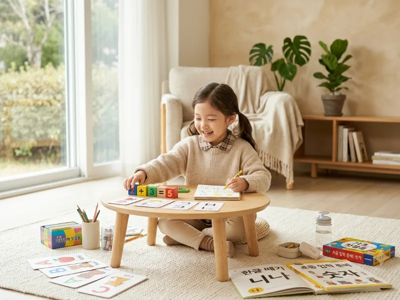
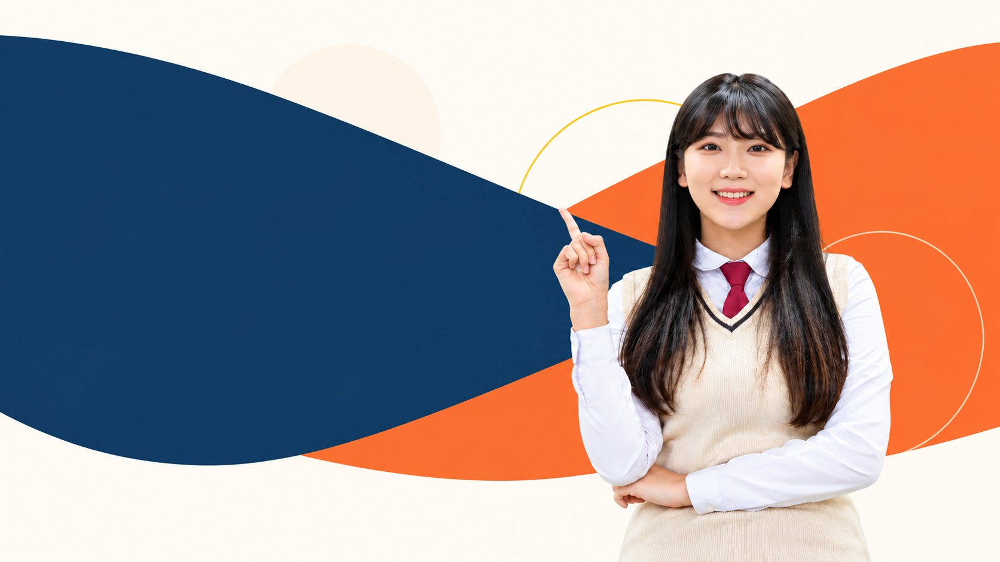

PRESCHOOL
유아
한글·수학·영어 기초와 학교생활 준비를 아이에게 맞는 속도로 진행합니다.
- 한글떼기·읽기쓰기
- 수 개념·기초수학
- 알파벳·기초 영어 표현
- 초등 입학 준비

학년마다 필요한 공부가 다릅니다. 아래는 일반적인 학습 목표이며, 실제 수업 방향은 학생 상황에 맞춰 정합니다.

한글·수학·영어 기초와 학교생활 준비를 아이에게 맞는 속도로 진행합니다.
교과 기초를 탄탄히 하고 스스로 공부하는 습관을 만들어 갑니다.
과목별 개념 이해를 바탕으로 학교 내신과 시험 준비를 시작합니다.
내신과 수능 목표에 맞춰 과목별 학습 계획과 취약 단원을 관리합니다.
방문과외는 선생님이 학생의 집을 찾아가, 학생이 평소 공부하는 공간에서 마주 앉아 1:1로 진행하는 수업입니다.
학원이나 공부방으로 이동하지 않고, 학생이 생활하는 집에서 수업을 받습니다.
선생님이 학생의 필기와 풀이 과정을 옆에서 직접 보면서 설명하고 질문을 주고받습니다.
여러 학생이 함께 듣는 수업과 달리, 한 학생의 학교 진도와 이해 속도를 기준으로 수업을 진행합니다.
학생의 학년·과목·목표를 확인합니다.
현재 수준과 목표에 맞춰 수업 방향을 정합니다.
학생에게 맞는 선생님을 안내합니다.
실제 수업 후 학습 방향을 다시 점검합니다.
학생에게 맞춘 1:1 수업을 시작합니다.
그 밖의 과목도 상담 시 수업 가능 여부를 확인해 안내드립니다.
두 방식 모두 1:1 수업입니다. 학생의 성향과 일정에 맞는 방식을 선택하시면 됩니다.
| 구분 | 방문과외 | 화상과외 |
|---|---|---|
| 수업 장소 | 학생의 집에서 대면 수업 | 각자의 공간에서 화상 프로그램으로 실시간 수업 |
| 이동 | 선생님이 방문하므로 학생 이동 없음 | 학생과 선생님 모두 이동 없음 |
| 수업 지역 | 선생님 배정 상황에 따라 상담 시 확인 | 인터넷 연결이 가능하면 지역 제약이 적음 |
| 준비할 것 | 책상과 조용한 공부 공간 | 기기, 카메라·마이크, 안정적인 인터넷 |
| 잘 맞는 학생 | 마주 앉아 풀이 과정을 함께 확인할 때 집중이 잘 되는 학생 | 이동이 부담되거나 지역에 관계없이 수업을 원하는 학생 |